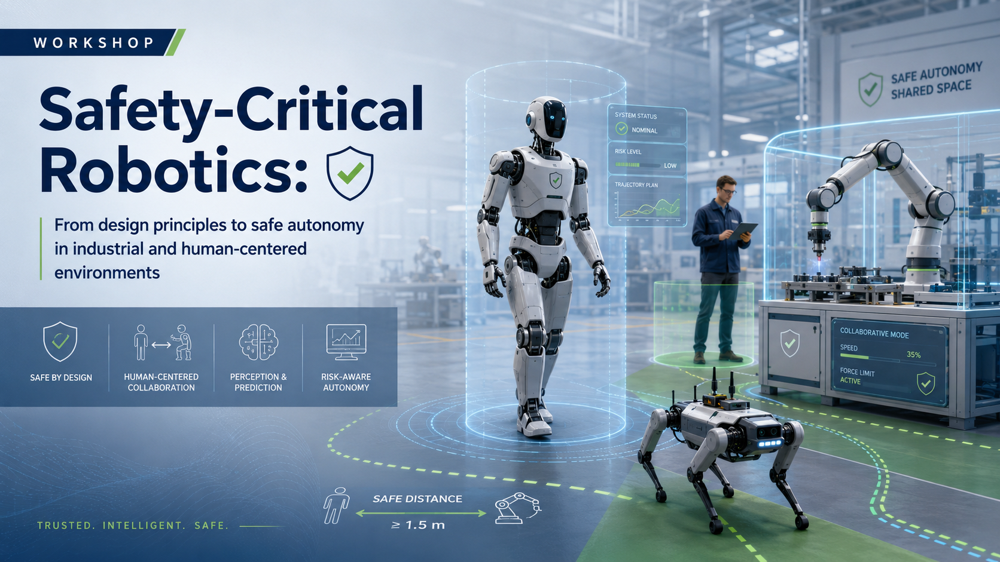

Heye Huang
Korea Advanced Institute of Science & Technology (KAIST)
Safe embodied AI and autonomous driving
Talk details
Detailed talk description will be announced soon.
Workshop #4 @ IEEE CASE 2026
From design principles to safe autonomy in industrial and human-centered environments

Scientific Scope
The workshop will provide a systems-level view of safety-critical robotics. Rather than focusing on one narrow sub-topic, it will connect robot embodiment, modeling, planning, control, and learning under the common objective of safe operation in industrial and human-centered environments.
A particular emphasis will be placed on safety challenges in real-world deployment, including manufacturing systems, logistics automation, and human-robot collaboration. The scientific scope reflects the state of the art in robotics and automation by bringing together classical safety mechanisms and modern autonomy.
Topics include robot design with intrinsic compliance; dynamic modeling for safe interaction; motion planning and navigation under safety constraints; reactive and barrier-based safety control; human-robot collaboration; safety-aware learning; robustness under uncertainty; and fail-safe or recovery behaviors.
The workshop also differentiates itself from prior related events. Over the last several years, workshops at ICRA, IROS, RSS, CoRL, and CASE have addressed individual aspects of safety, such as formal methods, robot safety under uncertainty, safe and robust robot learning, foundation-model safety, and safer autonomous navigation. In contrast, this workshop emphasizes a cross-layer perspective on safety-critical robotics and explicitly bridges model-based and learning-based approaches for deployable autonomy.
We invite submissions on topics including, but not limited to:
*All deadlines are Anywhere on Earth (AoE). Timelines are subject to change.
Posters. We invite poster submissions presenting original research, work in progress, deployment experiences, or early-stage ideas relevant to safety-critical robotics. Submissions will be selected based on relevance, novelty, clarity, and potential for discussion.
Email SubmissionInvited Talks
Korea Advanced Institute of Science & Technology (KAIST)
Safe embodied AI and autonomous driving
Detailed talk description will be announced soon.
Harbin Institute of Technology, Shenzhen
Robot localization and navigation
Detailed talk description will be announced soon.
Newcastle University
Machine learning for robotics
Detailed talk description will be announced soon.
University of Leeds
Robot learning
Detailed talk description will be announced soon.
University of Trento
Human-robot interaction
Detailed talk description will be announced soon.
Wuhan University
Actuator design and human-robot interaction
Detailed talk description will be announced soon.
Shenyang Institute of Automation, Chinese Academy of Sciences
Rehabilitation and assistive robotics
Detailed talk description will be announced soon.
Program
Postdoctoral Researcher
University of Trento

Postdoctoral Researcher
University of Trento

Postdoctoral Researcher
University of Tokyo
Associate Professor
Shenyang Institute of Automation, CAS
Associate Professor
Harbin Institute of Technology

Senior Research Scientist
Istituto Italiano di Tecnologia

Associate Professor
University of Oxford

Full Professor
Newcastle University